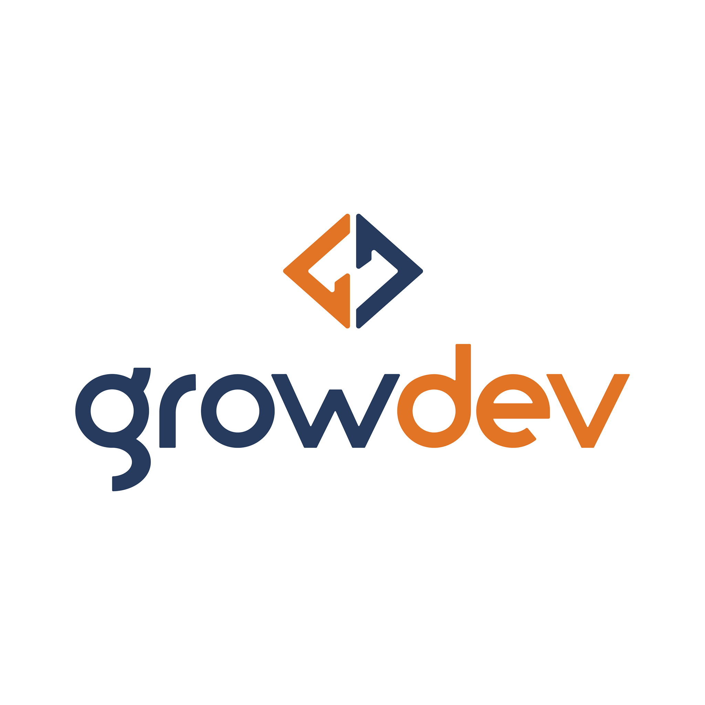

Formação Acadêmica
Ciência da computação
2020 - atual
Cursando Ciência da Computação na Universidade do Vale do Rio dos Sinos. Previsão de conclusão: 2024.
Técnico em Química
2014 - 2018
Formada como técnica em Química pela Fundação Escola Técnica Liberato Salzano Vieira da Cunha.
Estudos
Eu me considero uma pessoa focada e que adora estar em constante crescimento, sempre aberta a aprender coisas novas. Nesse sentido, além dos conhecimentos obtidos ao longo da graduação, atualmente tenho estudado tecnologias voltadas ao desenvolvimento web. A seguir apresento alguns estudos em andamento...
Full-stack
Em andamento
Formação Full-stack
Participação no bootcamp promovido pela Growdev.
Carga-horária: 800 h (previsão de conclusão em 12/2020)
Desenvolvimento Web:
HTML, CSS e JavaScript.
Back-end
Node, PostgreSQL e Redis.
Front-end
React.
Front-end

Em andamento
Formação Front-end
Realização de cursos pela plataforma ALURA.
Cursos concluídos:
HTML5 e CSS3 parte 1: A primeira página da Web.
HTML5 e CSS3 parte 2: Posicionamento, listas e navegação.
HTML5 e CSS3 parte 3: Trabalhando com formulários e tabelas.
HTML5 e CSS3 parte 4: Avançando no CSS
Flexbox: posicionamento de elementos.
CSS Grid: Simplificando layouts.
Iniciante em Programação
Em andamento
FormaçãoIniciante em Programação
Realização de cursos pela plataforma ALURA.
Cursos concluídos:
Lógica de programação I: Os primeiros programas com Javascript e HTML
Lógica de programação II: pratique com desenhos, animações e um jogo.
Projetos
Acredito que a melhor forma de aprender é praticando. Pensando nisso, venho desenvolvendo alguns projetos, como os apresentados a seguir...
Experiências Profissionais
Em construção...